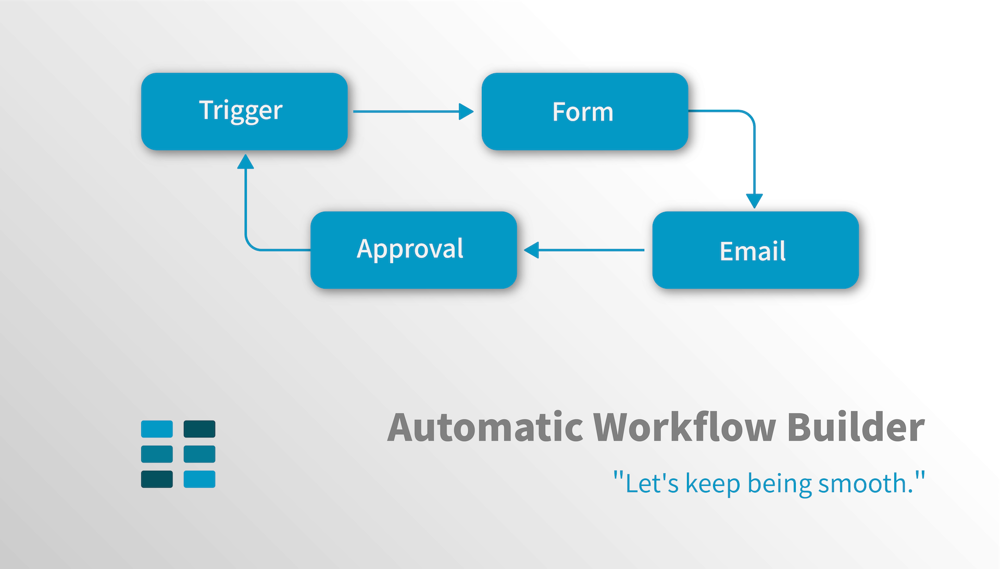

Description
2020年
自動化流程建立器(Flow Builder)讓使用者自行建立由不同任務組成的流程，配合邏輯(Logic)以及觸發條件的設定，讓建立好的流程自動被觸發、進行執行事件的條件判斷、執行事件，直到完成整個流程。
負責項目
網頁前端與UI設計
網頁前端工程
UX設計
任務建立與基本操作

設定「寄送Email」事件 (範例)

支援流程全域變數設定與使用

基礎提示與編輯中斷的提示畫面
儲存成功的通知畫面

中斷或取消編輯，系統會檢查是否有內容確實遭到修改，若有，才會跳出提示畫面。

後記
挑戰
外部元件庫與函式庫的整合
為了在短時間內開發出最小可行性產品(MVP)，這個模組整合了既有的開放式資源(Open Source)元件庫與函式庫。 其中特別是SVG繪圖函式的使用，必須提供貝茲曲線的即時渲染，考驗了不少前端工程的編碼技術與整合能力。
成長
UX設計
儘管仍有許多需要精進的使用者體驗部分，但在開發過程中，不斷以「建置流程的人」的角度思考，「什麼樣的資訊」，需要在 「什麼時間」呈現在「什麼地方」。 舉例來說，當滑鼠懸置(Hover)在每一個任務方塊上面時，該任務方塊的動作選項僅會出現「上下拖曳」的按鈕圖示，「刪除」的按鈕反而配置在右側的Side Bar， 目的是為了讓使用者在刪除任務方塊之前，先確認該方塊的內容，再行刪除，避免誤刪除重要的任務方塊。
這樣子的過程，讓我更熟稔於「對使用情境的假設」、「同理使用者」的設計師角色，與「卯足全力將功能開發完成的」程式開發者，兩者之間的立場切換。
競品分析
除了程式技術、邏輯概念的精進之外，為了讓產品更具有競爭力，在開發過程中，進行了許多競品試用與分析，這類型自動化流程建立器的競品， 如Microsoft Power Automate, Nintex, ProcessMaker...等， 這也意外的讓我開始學會如何將「定義競品」、「試用競品」、「學習競品」作為開發的方法。